git 难点知识汇总
git 支持的协议
协议有几种：https:// 协议、git:// 协议或者使用 SSH 传输协议，比如 user@server:path/to/repo.git或者ssh://[user@]server/project.git。
local协议就是在本机的两个文件系统（一个可能是 NFS也可能不是）之间进行传输的协议，并不值得推荐。
从安全来讲：ssh强制鉴权，这要求repo不能被匿名分发；而git协议正相反，无法鉴权，但速度最快。
areas
已修改表示修改了文件，但还没保存到数据库中。
已暂存表示对一个已修改文件的当前版本做了标记，使之包含在下次提交的快照中。
已提交表示数据已经安全地保存在本地数据库中。

staging area 也叫 index。add 就是把文件 index/staging 的过程。git 里经常混用 index 这个单词。
git 的这些区域都存在于 .git 文件夹下。用 clone 命令得到远端仓库的文件是得到远端仓库的每一个版本，不会遗漏。所以除了server hook 以外，仓库可以这样被保存和重建。git 是 version-based 的cvs，而不是delta based 的 cvs，在实际使用过程中也相当轻量级。
如果加上 untracked，则 area 有四种，而且最后一种 unmodified 被放在中间：

working directory = worktree
Untracked files: 下拥有被修改，但不是 modified 的文件。
分支
HEAD 指向的 commit，是当前分支的顶端。哪怕这个 commit 后面还有很多其他 commit，看起来 branch 在最后一个 commit 上，实际上 branch 的顶端，还是在 HEAD 上的。
所以新创建分支的时候 HEAD 还在当前分支上。
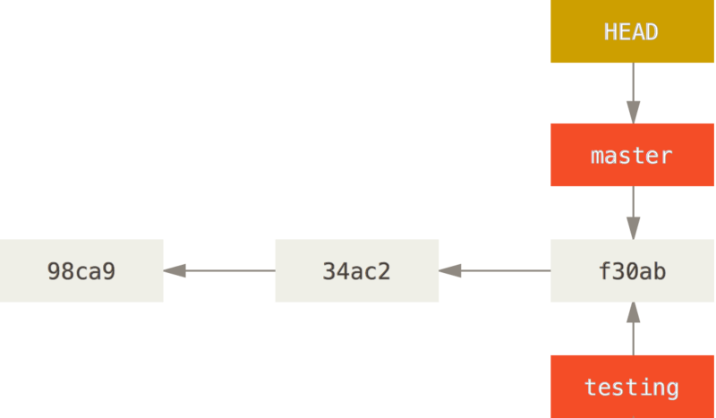
但切换分支后 HEAD 指向的是新分支了。

head = current checkout lastest commit，不是未提交的变更，也不是倒数第几个变更，也不是当前提交链条上的最远 commit，也不必然是 branch。在 checkout branch 的时候，等于 branch lastest commit。HEAD 分支随着提交操作自动向前移动。在分支之间切换，你需要的命令只有 branch、checkout 和 commit。
初始化命令
1 | |
…or create a new repository on the command line1
2
3
4
5
6echo "# SpringBootMVCUI" >> README.md
git init
git add README.md
git commit -m "first commit"
git remote add origin git@github.com:magicliang/SpringBootMVCUI.git
git push -u origin master
…or push an existing repository from the command line1
2git remote add origin git@github.com:magicliang/SpringBootMVCUI.git
git push -u origin master
…or import code from another repository
You can initialize this repository with code from a Subversion, Mercurial, or TFS project.
修改提交
查看历史
用git log可以查看提交历史，以便确定要回退到哪个版本。
要重返未来，用git reflog 查看命令历史，以便确定要回到未来的哪个版本。这个命令的本质，是找到没有 branch 的 HEAD 指向的悬垂节点。
关于 log 有一个复杂的用法解释，可以让我们看到我们平时使用的ui底层是怎样仅基于log和reflog命令就查看一个/多个分支的多时间区间/多点提交记录的。
这里面有一句话值得铭记：
将引用日志想作 Git 版的 shell 历史记录
如果你有 UNIX 或者 Linux 的背景，不妨将引用日志想作 Git 版的 shell 历史记录， 重点在于仅与你和你的会话相关，而与他人无关。
这句话的隐藏含义是，reflog 不会被 push 到远端，只有本地 repo 才留存。这个日志能够帮助修复那些 reset 导致的丢失，log（实际上是 commit log）是会被修改的，reflog 记录了 HEAD 的变动历史，而不只是 commit log。
reset
三个选项的区别是：是否调整 HEAD、丢掉 staging area 的修改、丢掉 working directory 的修改。
大多数的时候的回退操作是 reset 操作：
大部分情况下，我们可以使用git reset --hard commit_id 的方式来调整当前整个 git 仓库内的内容，这个操作会把代码仓库里的多余内容抹掉。git reset --hard大部分时间没什么用，因为 HEAD 本来已经是 HEAD 了，但它会把 working directory 里的内容给丢掉。这个操作是最危险的，其他reset都可以再调整，这个操作会丢失数据。git reset --hard HEAD~对于错误的merge有撤销的功能，缺点是会重写历史，这对 public 分支是有害的。
如果我们想把代码回滚到特定的版本，但保留 commit 之间的修改，则可以使用git -c core.quotepath=false -c log.showSignature=false reset --soft 6ef50b9f2186fbb0f89b100dfe7399c2b918446d 命令，这样特定版本之间的修改，会停留在 staged 区域，等待再次被修改为一个 commit 并提交。同样是保留文件修改，soft 会帮你做好 add 动作。git reset --soft HEAD~2会把最近2次 commit 都放在 index 里，这样我们一次 commit 就压缩了这2次 commit。
git -c core.quotepath=false -c log.showSignature=false reset --mixed 6ef50b9f2186fbb0f89b100dfe7399c2b918446d，则 commit 之间的代码会被放到 working directory（而不是 staging area），等待 add 和 commit。同样是保留文件修改，mixed 连 add 都不会帮你做。而且，它是 reset 的默认选项。
等价于：
1 | |
git -c core.quotepath=false -c log.showSignature=false reset --keep 6ef50b9f2186fbb0f89b100dfe7399c2b918446d 看不出这个命令和hard有什么区别。
reset 命令会以特定的顺序重写这三棵树，在你指定以下选项时停止：
- 移动 HEAD 分支的指向 （若指定了 —soft，则到此停止，变更留在 index/staging 和 WD 里 里，也就意味着这是一次已经有了快照的等待提交的commit，只要再次提交就会得到新的 commit，不再需要 add。这时候再次提交就只能主要修改提交消息，也就起到了 —amend 类似的作用）
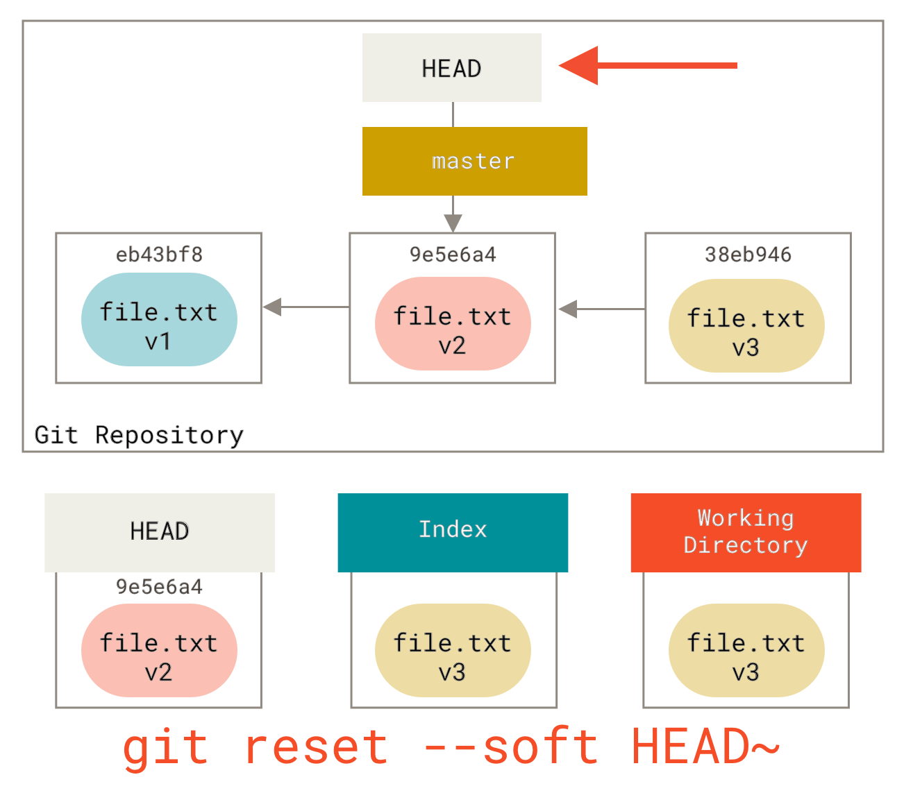
- 使索引看起来像 HEAD （若未指定 —hard，即指定了 mix，则 Index 也被抹去，变更留在 WD 里，所以这是取消了 commit 和 add）
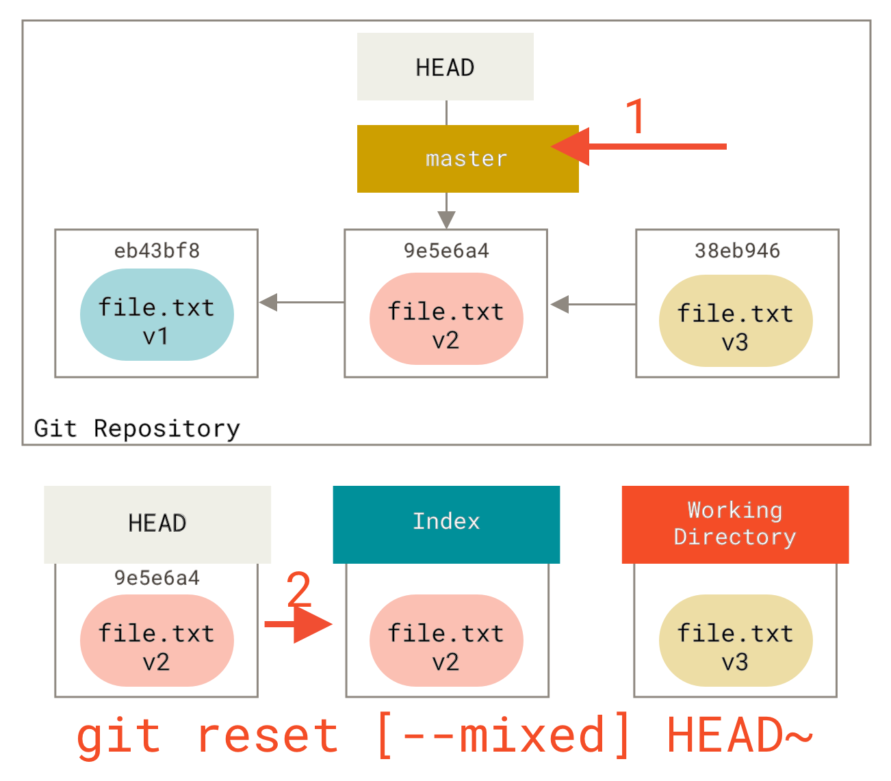
- 使工作目录看起来像索引（若指定了 —hard，丢弃一切变更）
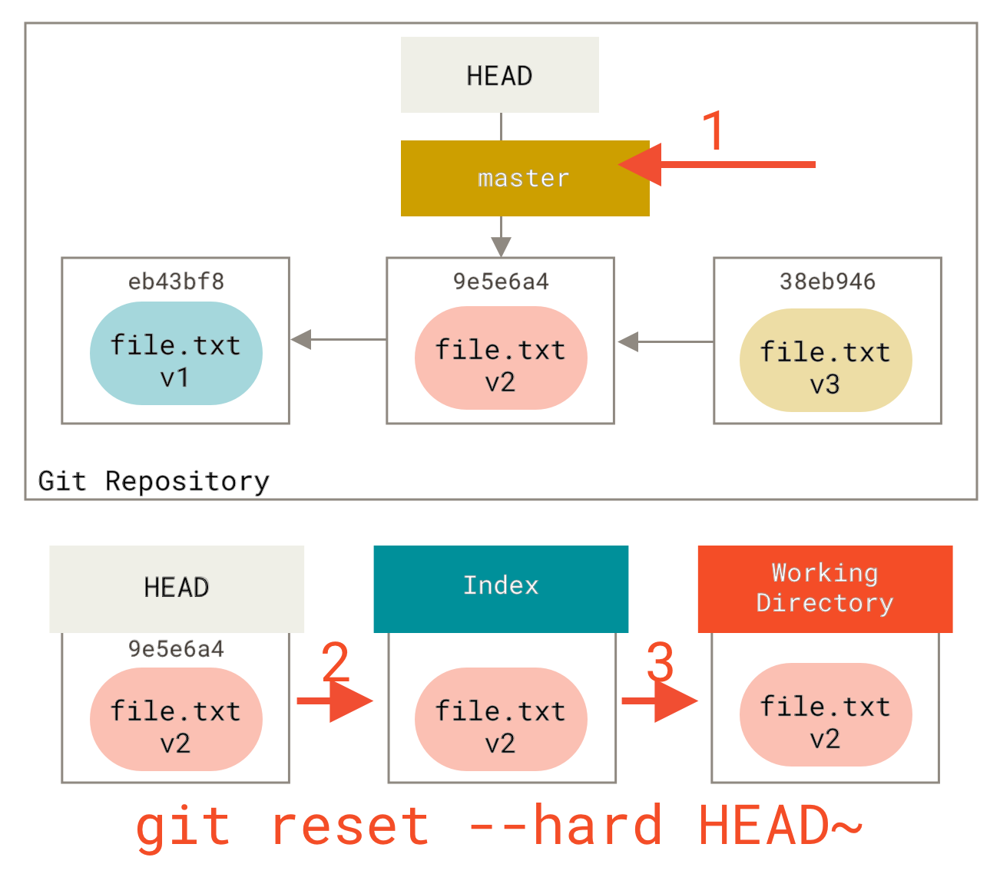
上面的图还有一个特点，在正常情况下，三个区域是逐次增加和逐次回退的。v3 覆写 v2 是从右到左；而 v2 覆写 v3，则是先从链表里面用 HEAD 的父节点 HEAD~ 来覆写 HEAD，再从 HEAD 往右覆写。
有一个衍生操作：想让文件从 index 里回到 WD 怎么办？
1 | |
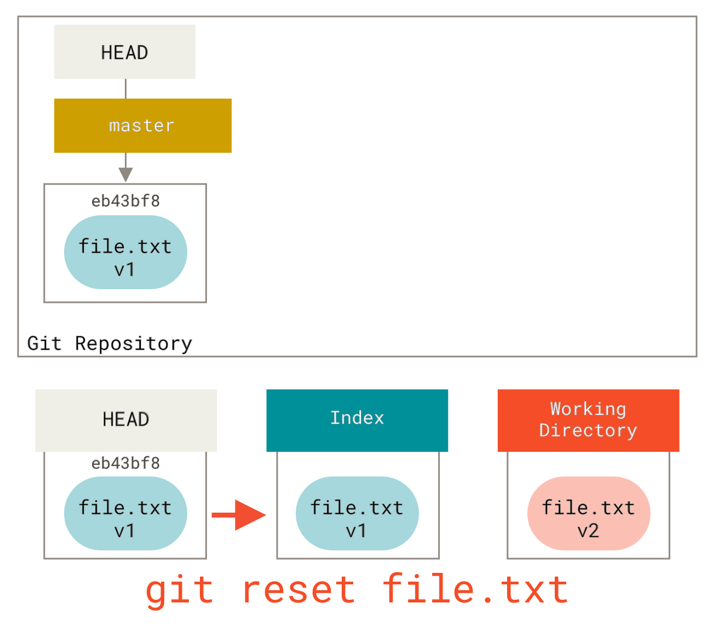
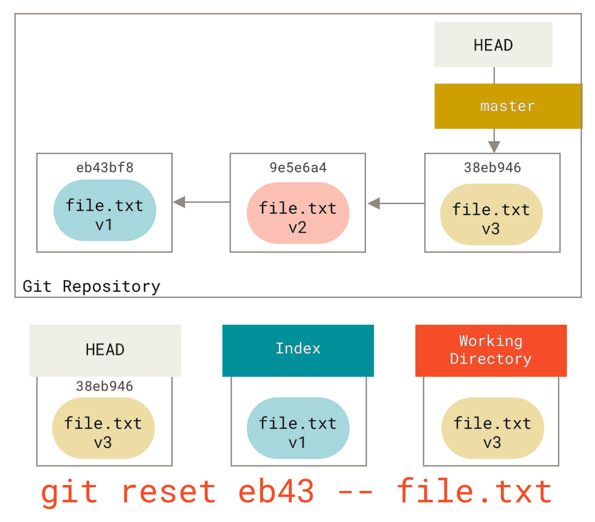
checkout
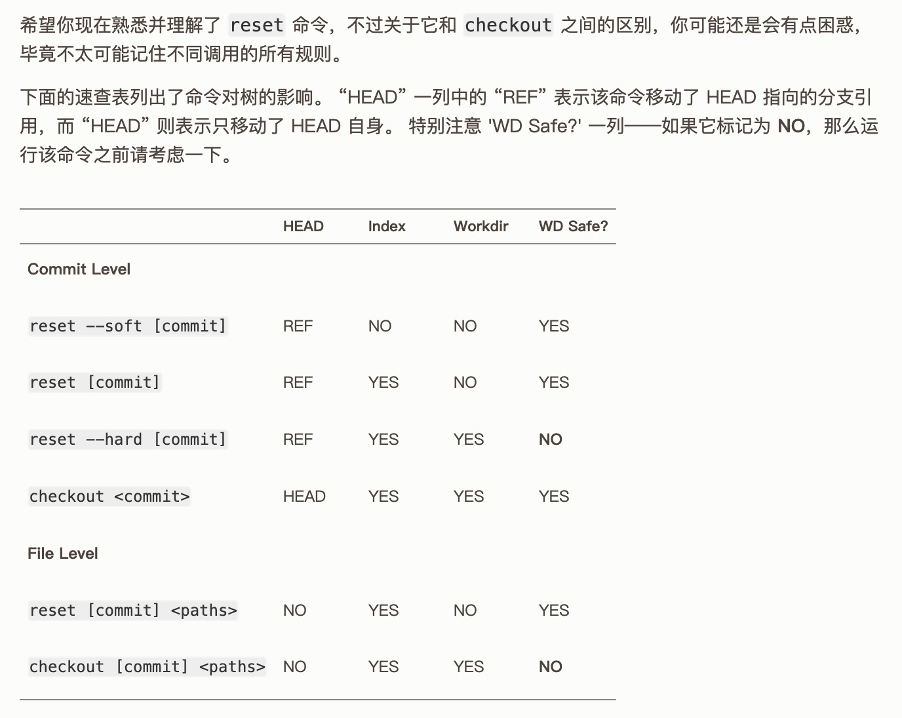
对分支
首先不同于 reset —hard，checkout（一个分支） 对工作目录是安全的，它会通过检查来确保不会将已更改的文件弄丢（在某些工具里会有 smart checkout 和 force checkout 的区别）。 其实它还更聪明一些。它会在工作目录中先试着简单合并一下，这样所有 还未修改过的 文件都会被更新。 而 reset —hard 则会不做检查就全面地替换所有东西。
第二个重要的区别是 checkout 如何更新 HEAD。 reset 会移动 HEAD 分支的指向，而 checkout 只会移动 HEAD 自身来指向另一个分支。
对文件
运行 checkout 的另一种方式就是指定一个文件路径，这会像 reset 一样不会移动 HEAD。 它就像 git reset [branch] file 那样用该次提交中的那个文件来更新索引，但是它也会覆盖工作目录中对应的文件。 它就像是 git reset —hard [branch] file（如果 reset 允许你这样运行的话）， 这样对工作目录并不安全，它也不会移动 HEAD。
1 | |
对于 staged 文件来讲，checkout；对于 commit 的文件来讲，reset —hard。在git里，checkout意味着 working directory 的重置。checkout后面可以接的有文件名、commit 和分支名（实际上和commit一样都是一个版本快照的hash指针）。
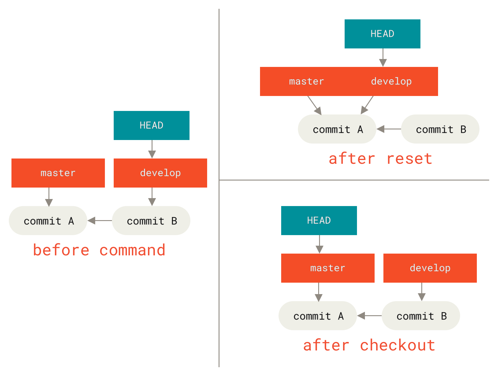
reset 会把分支这种类似alias的内容也给改了。在git的术语里，reset will move the branch HEAD points to, checkout moves HEAD itself。reset 也因此可以起到修复分支的作用，而我们平时checkout是为了修复 WD 中的某些 path。
revert
产生一个反 commit。
在这里要重新引入三棵树，解释三棵树分别意味着什么：
| 树 | 用途 |
|---|---|
| HEAD | 上一次提交的快照，下一次提交的父结点 |
| Index（staging area） | 预期的下一次提交的快照 |
| Working Directory（WD） | 沙盒 |
运行 git status 会没有输出，意味着三棵树变得相同了。
revert 可以把2个分支的merge只revert一半：
git revert -m 1 HEAD
[master b1d8379] Revert “Merge branch ‘topic’”
-m 1 标记指出 “mainline” 需要被保留下来的父结点。 当你引入一个合并到 HEAD（git merge topic），新提交有两个父结点：第一个是 HEAD（C6），第二个是将要合并入分支的最新提交（C4）。 在本例中，我们想要撤消所有由父结点 #2（C4）合并引入的修改，同时保留从父结点 #1（C6）开始的所有内容。
1 是指 #1
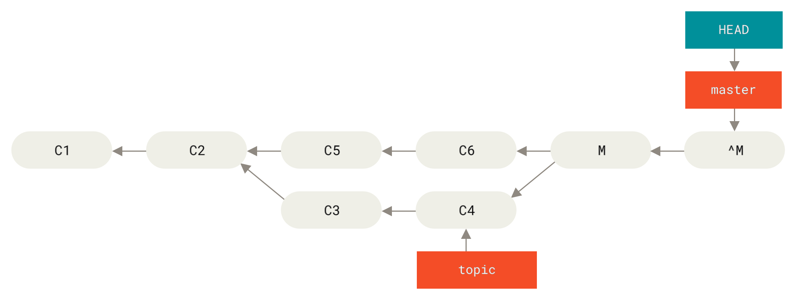
新的提交 ^M 与 C6 有完全一样的内容，所以从这儿开始就像合并从未发生过，除了“现在还没合并”的提交依然在 HEAD 的历史中。 如果你尝试再次合并 topic 到 master Git 会感到困惑：
git merge topic
Already up-to-date.
amend
我们的 amend 主要是用 commit2 来代替 commit1：
1 | |
签出操作
git checkout最简单的用法，显示工作区，暂存区和 HEAD 的差异。
注意 checkout 本身不是 reset，纯粹的 checkout 会导致 HEAD 指针比 branch 的最后头指针更加 behind。因为 HEAD 等于 current checkout commit 的定义，凡是不是 latest 的 commit，HEAD 都会因此进入 ched HEAD STATE。因为 checkout 本来是拿来移动 branch 的。
我们在 ched head 上乱修改，也可以产生提交。但这个提交是不能当做任何一个 branch 的内容的，也就是在一个匿名的 branch 内。但我们可以再做一次checkout -b，新建出真正的分支（还有一个不常用的简写操作git checkout --track origin/serverfix）。大多数时候我们会忘记这样给匿名分支命名，因为我们回溯到某些checkout 的时候往往是我们 rebase 的时候，这时候我们想着的不是给旧分支分叉，而是想办法把旧分支的内容修改为我们想要的某些版本。
似乎可以这么理解，git checkout 历史版本，是为了在历史版本上创建新分支而不是更正当前版本而存在的。如果不是rebase而进入这些commit，系统进入悬垂态是必须要解决的。
因为 checkout 总是被用来切换分支，所以它会导致 local modification 被覆盖，所以我们在 checkout 的时候，总是要先 commit 或者 stash 一下我们的修改。
提交回退
我们可以用以下的命令，产生某一个 commit 涉及到的文件的反操作，而不是 commit 和 head 之间的反操作。
git -c core.quotepath=false -c log.showSignature=false revert 6ef50b9f2186fbb0f89b100dfe7399c2b918446d --no-commit
这样可以提交反操作，而不丢失正操作的 commit。这样做的好处是，commit 历史是 append only 的，不会被修改。
merge
merge 的用途是把一个分支的内容合入另一个分支。
要把 master 的代码合并入 feature。
1 | |
git merge 当然会产生一个多余的 commit，而且如果有冲突的话，还必须在这个 commit 里修改，化解冲突。我们在工程上倒是可以规定所有的 merge 都必须是 no conflict 的，这就要求我们合并里的 source 分支，反而要先 merge target 分支，这样所有的 merge 都是 fast-forward 的。
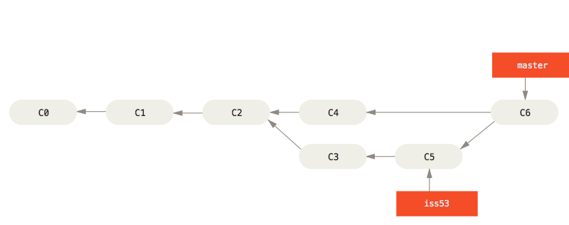
1 | |
rebase
本节最重要的标准流程是应该是 feature rebase onto master，然后 master merge from feature。
git rebase/merge master 的宾语都是 master，都是基于，但基底分支是feature/master。从句式来看，这是 merge from 和 rebase onto 的区别。
rebase 的用途也是把一个分支的内容合入另一个分支。作为 merge 的替代选择，它会产生一个非常整洁的提交记录。让本来并行的开发记录看起来像是串行的一样。
变基的主流程是：
- 先找到共同祖先。
- 再找到基底分支和当前分支的全部提交。
- 将当前分支的提交逐步应用到基地分支上去。
1 | |
rebase 的本质，顾名思义，是改变当前分支的 branch out 的位置。即，把当前 feature 整个移动到 master 的 HEAD 之后，即所谓的 rebase onto。
我们可以看看最基础的分支演进图：
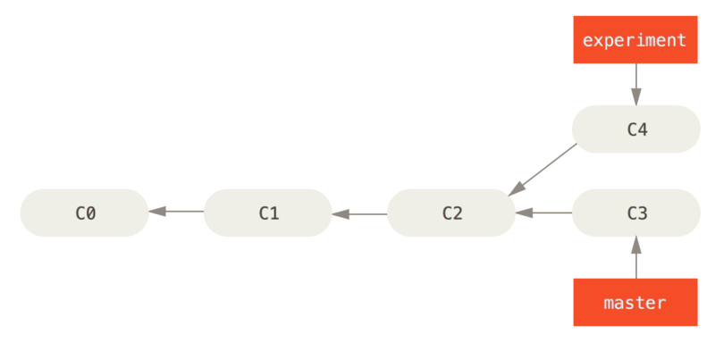
最简单的操作就是 merge，我们把这个叫做
The easiest way to integrate the branches, as we’ve already covered, is the merge command.
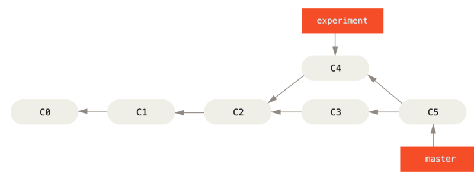
rebase 导致最后的项目历史呈现出完美的线性——你可以从项目终点到起点浏览而不需要任何的 fork。这时候我们的 experiment 分支变成直线了。
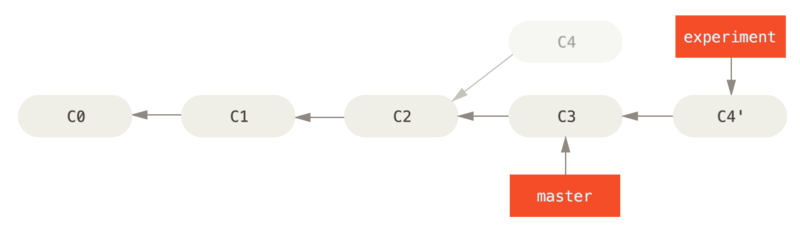
但我们这里 rebase 的当前分支是experiment，是为了 master 更好地 merge 而服务的，而不是让 master rebase onto experiment。
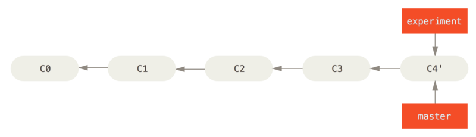
这个故事的完整操作是：
git checkout experiment
git rebase master
First, rewinding head to replay your work on top of it…
Applying: added staged command git
checkout master
git merge experiment
rebase 因为会修改 branch 的历史，所以 never use it on public branches，use it on experiment branch。因为这会给其他人的开发分支带来分歧。
而如果我们使用交互式的 rebase，就是把git rebase -i master。则会把我们要 branch out 的 commit 做一个整理。
强制推送会毁灭推送历史
如果你想把 rebase 之后的 master 分支推送到远程仓库，Git 会阻止你这么做，因为两个分支包含冲突。但你可以传入 —force 标记来强行推送。就像下面一样：
1 | |
它会重写远程的 master 分支来匹配你仓库中 rebase 之后的 master 分支，对于团队中其他成员来说这看上去很诡异。所以，务必小心这个命令，只有当你知道你在做什么的时候再使用。如果提交存在于你的仓库之外，而别人可能基于这些提交进行开发，那么不要执行变基。
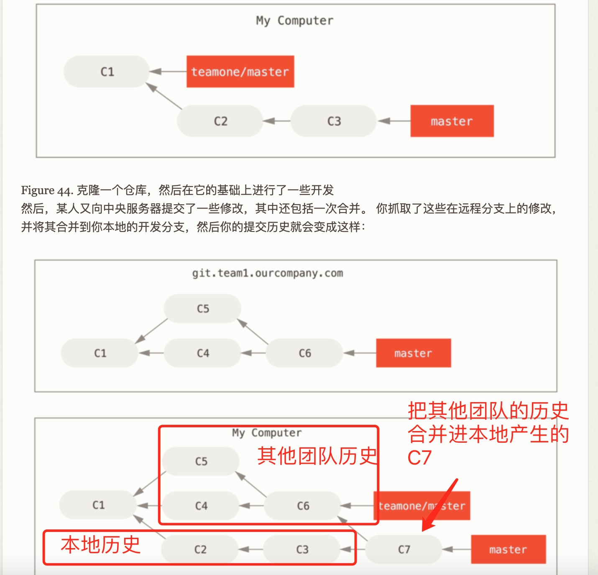
这时候 team1 rebase 丢弃一些分支，就会产生意想不到的后果。
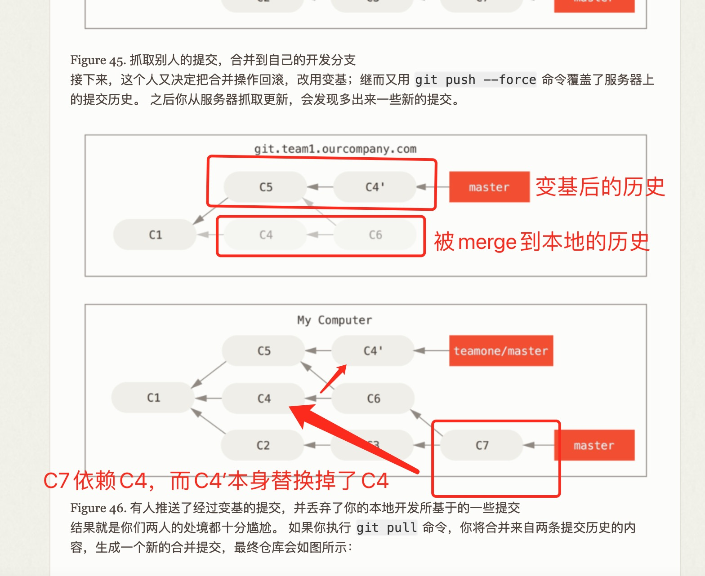
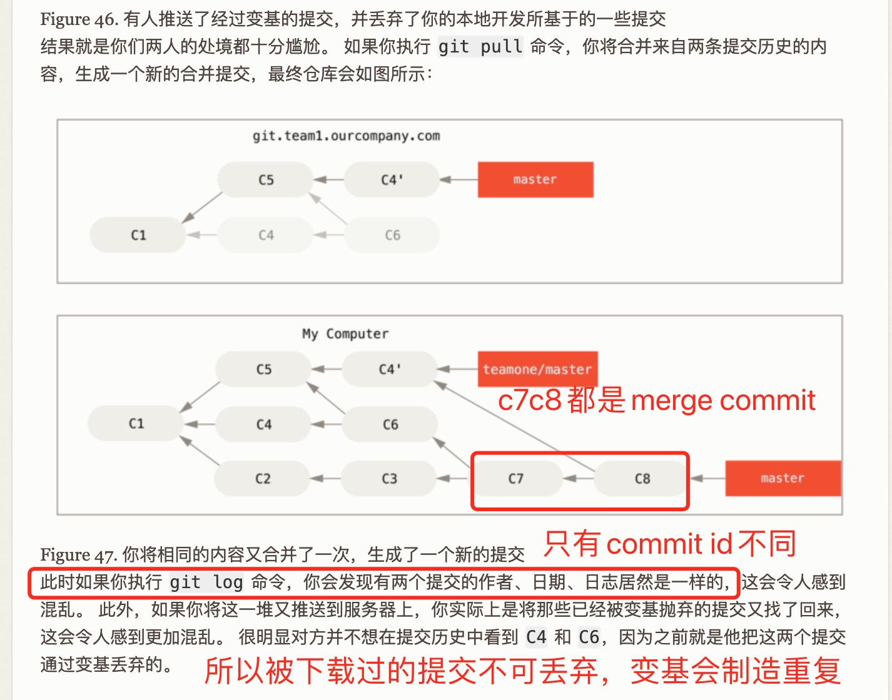
变基只能让被变基的分支干净，也许能让master干净，但不会让以前pull过的分支干净。我们会看到内容一样，作者和时间一样但 hash 不一样的提交，产生 no diff 式的困惑。
1 | |
这两种方法可以拉取被人rebase过的公共分支，而不丢失修改，而且不会产生重复的commit。
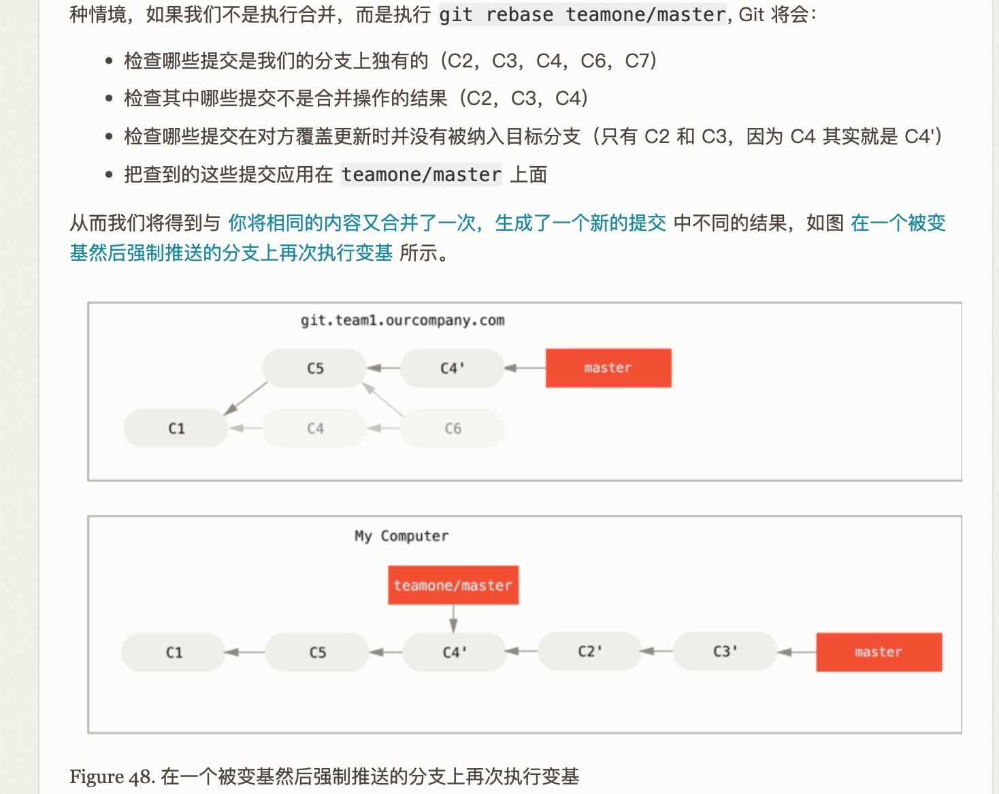
所以要消除 divergence 就要gplr！
补丁式 onto
1 | |
以上命令的意思是：“取出 client 分支，找出它从 server 分支分歧之后的补丁， 然后把这些补丁在 master 分支上重放一遍，让 client 看起来像直接基于 master 修改一样”。
然后
1 | |
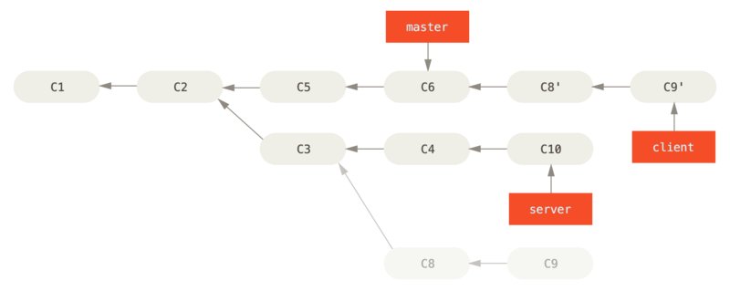
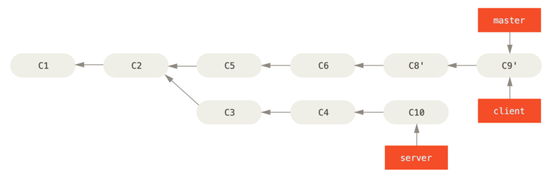
变基操作的实质是丢弃一些现有的提交，然后相应地新建一些内容一样但实际上不同的提交。在变基后，所有的patch commit都变了，c3变成c3~，c4变成c4~，类似区块链。
remote
1 | |
git fetch origin 在本地生成一个远程分支 origin/serverfix，指向服务器的 serverfix 分支的引用。这是一个指针，而不是可编辑的副本（拷贝），除非使用 checkout -b 的方式。
commit
1 | |
标签
Git 支持两种标签：轻量标签（lightweight）与附注标签（annotated）。
轻量标签很像一个不会改变的分支——它只是某个特定提交的引用。
而附注标签是存储在 Git 数据库中的一个完整对象， 它们是可以被校验的，其中包含打标签者的名字、电子邮件地址、日期时间， 此外还有一个标签信息，并且可以使用 GNU Privacy Guard （GPG）签名并验证。 通常会建议创建附注标签，这样你可以拥有以上所有信息。但是如果你只是想用一个临时的标签， 或者因为某些原因不想要保存这些信息，那么也可以用轻量标签。
1 | |
默认情况下，git push 命令并不会传送标签到远程仓库服务器上。 在创建完标签后你必须显式地推送标签到共享服务器上。 这个过程就像共享远程分支一样——你可以运行 git push origin
1 | |
别名
在创建你认为应该存在的命令时这个技术会很有用。 例如，为了解决取消暂存文件的易用性问题，可以向 Git 中添加你自己的取消暂存别名：
1 | |
这会使下面的两个命令等价：
1 | |
工作流
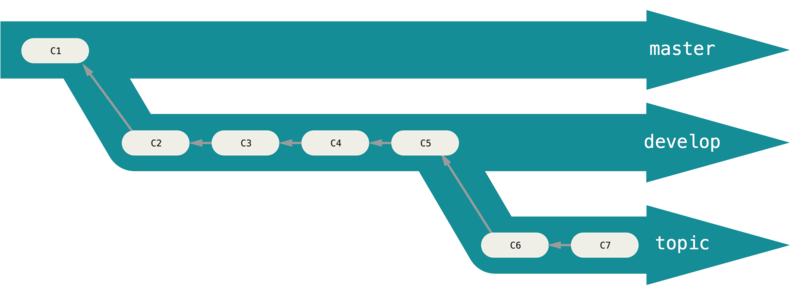
master 通常落后于其他分支，分支的滞后意味着稳定。
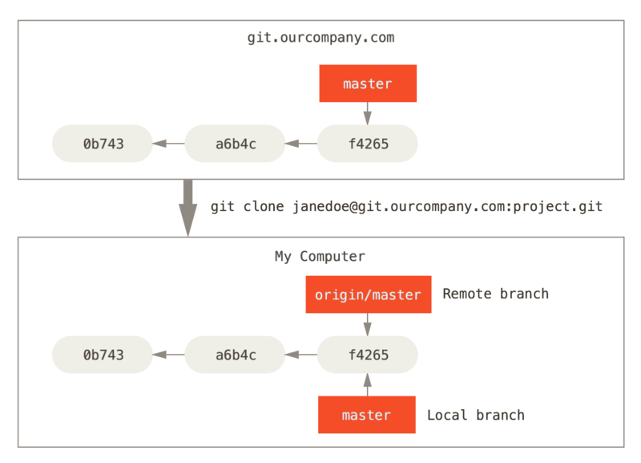
特殊技巧
交互式提交
1 | |
其中update是暂存整个文件，patch是暂存其他几行。
只 staged 几个文件的结果就是
Update>>
updated 2 paths
updated path 意味着暂存了几个文件。
储藏
在git术语里，暂存（stage）和储藏（stash）有很大不同。
git stash 大致上等于 git stash push。按顺序压入栈。
1 | |
这里的 WIP 是 work in progress 的意思，有编号意味着可以从命令里引用。
1 | |
—index 意味着，staging 的状态也会被 stash 起来，而不是在pop的时候变成 unstaging 状态。
1 | |
怎样把一些 commit 从当前分支（通常是 master）移到另一个分支
1 | |
怎样把当前分支的提交直接复制到其他分支
1 | |
基于某一个分支压缩本分支上的修改
1 | |
怎样彻头彻尾地 ignore 不需要的文件
参考gitignore.io。
- Edit .gitignore to match the file you want to ignore
git rm --cached /path/to/file，如果不加这个option，则只是把文件从 tracked 变成 untracked。
处理经典的双提交冲突
问题：
On branch main Your branch and ‘origin/main’ have diverged, and have 1
and 3 different commits each, respectively. (use “git pull” to merge
the remote branch into yours)nothing to commit, working tree clean
一般的冲突文件格式是：
1 | |
a merge b 遇到冲突，下方就是b的文件，而上方是 a 的文件。
这时候如果直接 git pull 的话，fast forward 有一定概率会失败，需要进入git pull --rebase 的模式，基于 rebase 进行拉取。
然后
1 | |
搜索
1 | |
搭建自己的服务端
github 工作流
在以前，“fork”是一个贬义词，指的是某个人使开源项目向不同的方向发展，或者创建一个竞争项目，使得原项目的贡献者分裂。 在
GitHub，“fork”指的是你自己的空间中创建的项目副本，这个副本允许你以一种更开放的方式对其进行修改。
- 派生一个项目
- 从 master 分支创建一个新分支
- 提交一些修改来改进项目
- 将这个分支推送到 GitHub 上
- 创建一个拉取请求
- 讨论，根据实际情况继续修改
- 项目的拥有者合并或关闭你的拉取请求
- 将更新后的 master 分支同步到你的派生中
from gitlab’s perspective：
Merge or pull requests are created in a git management application and
ask an assigned person to merge two branches. Tools such as GitHub and
Bitbucket choose the name pull request since the first manual action
would be to pull the feature branch. Tools such as GitLab and
Gitorious choose the name merge request since that is the final action
that is requested of the assignee. In this article we’ll refer to them
as merge requests.
但从实战来讲，pr 是从 fork repo merge 到 upstream repo，mr 则是在同一个 repo 里 merge。虽然这并不是这两个操作唯一的使用场景。我们可以在所有场景下使用 merge request，正如下面的例子一样：
In my point of view, they mean the same activity but from different
perspectives:Think about that, Alice makes some commits on repository A, which was
forked from Bob’s repository B.When Alice wants to “merge” her changes into B, she actually wants Bob
to “pull” these changes from A.Therefore, from Alice’s point of view, it is a “merge request”, while
Bob views it as a “pull request”.
使用git调试
文件标注
元数据的三大要素：作者、时间和提交hash。
1 | |
二分查找
1 | |
github
service and hook
service
有许多可以选择的服务，大多数是整合到其他的商业与开源系统中。它们中的大多数是为了整合持续集成服务、BUG 与问题追踪系统、聊天室系统与文档系统。我们将会通过设置一个非常简单的例子来介绍。 如果从 “Add Service” 选择 “email”，会得到一个类似电子邮件服务配置的配置屏幕。
hook
如果需要做一些更具体的事，或者想要整合一个不在这个列表中的服务或站点，可以转而使用更通用的钩子系统。 GitHub 仓库钩子是非常简单的。 指定一个 URL 然后 GitHub 在任一期望的事件发生时就会发送一个 HTTP 请求到那个 URL 。
这里给的例子都使用 ruby 小框架 Sinatra 来写的。
1 | |
git diff 的输出
1 | |
这段 Git 输出是使用 git diff 命令生成的，它显示了文件 hello.rb 在版本控制中的不同版本之间的差异。这里的输出显示了一个合并冲突（merge conflict），这通常发生在尝试合并两个分支时，如果两个分支在相同的文件的相同部分有冲突的更改。
下面是输出的逐行解释：
- diff —cc hello.rb：这是 Git 使用的颜色冲突（cc）diff 格式，用于显示文件 hello.rb 中的合并冲突。
- index 0399cd5,59727f0..0000000：这行显示了冲突发生时的索引状态。0399cd5 和 59727f0 是冲突发生前两个不同版本的 SHA-1 哈希值，而 0000000 表示当前工作区的版本。
- —- a/hello.rb：这表示冲突发生前的一个版本。
- +++ b/hello.rb：这表示当前工作区中的版本。
- @@@ -1,7 -1,7 +1,11 @@@：这是 diff 的统一格式，显示了冲突发生的位置。-1,7 表示在旧版本中从第1行到第7行，-1,7 表示在新版本中也是从第1行到第7行，+1,11 表示在当前工作区中从第1行到第11行。
! /usr/bin/env ruby：这是 Ruby 脚本的 shebang 行，告诉系统这个文件应该用 Ruby 来执行。
- def hello：这是 Ruby 方法的定义。
- +<<<<<<< HEAD：这是 Git 合并冲突的标记，表示接下来的代码块是 HEAD（当前分支）中的版本。
- puts ‘hola world’：这是 HEAD 分支中的代码，打印 “hola world”。
- +=======：这是 Git 合并冲突的分隔符，表示接下来的代码块是另一个分支中的版本。
- puts ‘hello mundo’：这是另一个分支中的代码，打印 “hello mundo”。
- +>>>>>>> mundo：这是 Git 合并冲突的结尾标记，表示另一个分支的代码块结束。
- end：这是 Ruby 方法的结束。
要解决这个合并冲突，你需要决定保留哪个版本的代码，或者合并两个版本的代码。一旦你解决了冲突，你需要使用 git add 命令来标记文件为已解决，然后可以继续合并操作或者提交更改。
子模块
有种情况我们经常会遇到：某个工作中的项目需要包含并使用另一个项目。 也许是第三方库，或者你独立开发的，用于多个父项目的库。 现在问题来了：你想要把它们当做两个独立的项目，同时又想在一个项目中使用另一个。
我们举一个例子。 假设你正在开发一个网站然后创建了 Atom 订阅。 你决定使用一个库，而不是写自己的 Atom 生成代码。 你可能不得不通过 CPAN 安装或 Ruby gem 来包含共享库中的代码，或者将源代码直接拷贝到自己的项目中。 如果将这个库包含进来，那么无论用何种方式都很难定制它，部署则更加困难，因为你必须确保每一个客户端都包含该库。 如果将代码复制到自己的项目中，那么你做的任何自定义修改都会使合并上游的改动变得困难。
Git 通过子模块来解决这个问题。 子模块允许你将一个 Git 仓库作为另一个 Git 仓库的子目录。 它能让你将另一个仓库克隆到自己的项目中，同时还保持提交的独立。
1 | |
这会改写.gitmodules文件，内容通常是：
[submodule “DbConnector”]
path = DbConnector url =
https://github.com/chaconinc/DbConnector
这样产生的项目在一般的 clone 里是没有子模块内容，而空有目录的，需要执行以下命令：
1 | |
然后在子模块目录中运行git fetch和git merge origin/master
底层与上层命令
四大关键目录
从根本上来讲 Git 是一个内容寻址（content-addressable）文件系统，并在此之上提供了一个版本控制系统的用户界面。 马上你就会学到这意味着什么。
早期的 Git（主要是 1.5 之前的版本）的用户界面要比现在复杂的多，因为它更侧重于作为一个文件系统，而不是一个打磨过的版本控制系统。 不时会有一些陈词滥调抱怨早期那个晦涩复杂的 Git 用户界面；不过最近几年来，它已经被改进到不输于任何其他版本控制系统地清晰易用了。
本书主要涵盖了 checkout、branch、remote 等约 30 个 Git 的子命令。 然而，由于 Git 最初是一套面向版本控制系统的工具集，而不是一个完整的、用户友好的版本控制系统， 所以它还包含了一部分用于完成底层工作的子命令。 这些命令被设计成能以 UNIX 命令行的风格连接在一起，抑或藉由脚本调用，来完成工作。 这部分命令一般被称作“底层（plumbing）”命令，而那些更友好的命令则被称作“上层（porcelain）”命令。
1 | |
objects 目录存储所有数据内容；refs 目录存储指向数据（分支、远程仓库和标签等）的提交对象的指针；HEAD 文件指向目前被检出的分支；index 文件保存暂存区信息。
二进制对象数据库
Git 是一个内容寻址文件系统，听起来很酷。但这是什么意思呢？ 这意味着，Git 的核心部分是一个简单的键值对数据库（key-value data store）。 你可以向 Git 仓库中插入任意类型的内容，它会返回一个唯一的键，通过该键可以在任意时刻再次取回该内容。
可以通过底层命令 git hash-object 来演示上述效果——该命令可将任意数据保存于 .git/objects 目录（即 对象数据库），并返回指向该数据对象的唯一的键。
1 | |
在这种最简单的形式中，git hash-object 会接受你传给它的东西，而它只会返回可以存储在 Git 仓库中的唯一键。 -w 选项会指示该命令不要只返回键，还要将该对象写入数据库中。 最后，—stdin 选项则指示该命令从标准输入读取内容；若不指定此选项，则须在命令尾部给出待存储文件的路径。
可以对一个文件进行简单的版本控制。 首先，创建一个新文件并将其内容存入数据库：
1 | |
接着，向文件里写入新内容，并再次将其存入数据库：
1 | |
对象数据库记录下了该文件的两个不同版本，当然之前我们存入的第一条内容也还在：
1 | |
现在可以在删掉 test.txt 的本地副本，然后用 Git 从对象数据库中取回它的第一个版本：
1 | |
或者第二个版本：
1 | |
几种对象
blob 数据对象
然而，记住文件的每一个版本所对应的 SHA-1 值并不现实；另一个问题是，在这个（简单的版本控制）系统中，文件名并没有被保存——我们仅保存了文件的内容。 上述类型的对象我们称之为 数据对象（blob object）。 利用 git cat-file -t 命令，可以让 Git 告诉我们其内部存储的任何对象类型，只要给定该对象的 SHA-1 值：
1 | |
树对象
接下来要探讨的 Git 对象类型是树对象（tree object），它能解决文件名保存的问题，也允许我们将多个文件组织到一起。 Git 以一种类似于 UNIX 文件系统的方式存储内容，但作了些许简化。 所有内容均以树对象和数据对象的形式存储，其中树对象对应了 UNIX 中的目录项，数据对象则大致上对应了 inodes 或文件内容。 一个树对象包含了一条或多条树对象记录（tree entry），每条记录含有一个指向数据对象或者子树对象的 SHA-1 指针，以及相应的模式、类型、文件名信息。 例如，某项目当前对应的最新树对象可能是这样的：
1 | |
本例中，我们指定的文件模式为 100644，表明这是一个普通文件。 其他选择包括：100755，表示一个可执行文件；120000，表示一个符号链接。 这里的文件模式参考了常见的 UNIX 文件模式，但远没那么灵活——上述三种模式即是 Git 文件（即数据对象）的所有合法模式（当然，还有其他一些模式，但用于目录项和子模块）。而 blob 和 tree 说明了不同的 type。
master^{tree} 语法表示 master 分支上最新的提交所指向的树对象。 请注意，lib 子目录（所对应的那条树对象记录）并不是一个数据对象，而是一个指针，其指向的是另一个树对象：
1 | |
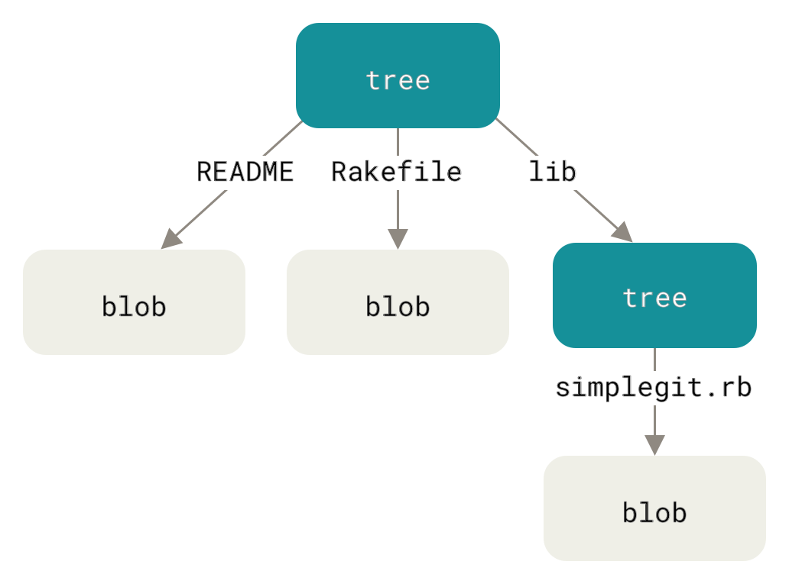
你可以轻松创建自己的树对象。 通常，Git 根据某一时刻暂存区（即 index 区域，下同）所表示的状态创建并记录一个对应的树对象， 如此重复便可依次记录（某个时间段内）一系列的树对象（所以各种 diff 命令实际上是对比 tree object 的差异）。 因此，为创建一个树对象，首先需要通过暂存一些文件来创建一个暂存区。 可以通过底层命令 git update-index 为一个单独文件——我们的 test.txt 文件的首个版本——创建一个暂存区。 利用该命令，可以把 test.txt 文件的首个版本人为地加入一个新的暂存区。 必须为上述命令指定 —add 选项，因为此前该文件并不在暂存区中（我们甚至都还没来得及创建一个暂存区呢）； 同样必需的还有 —cacheinfo 选项，因为将要添加的文件位于 Git 数据库中，而不是位于当前目录下。 同时，需要指定文件模式、SHA-1 与文件名：
1 | |
提交对象
如果你做完了以上所有操作，那么现在就有了三个树对象，分别代表我们想要跟踪的不同项目快照。 然而问题依旧：若想重用这些快照，你必须记住所有三个 SHA-1 哈希值。 并且，你也完全不知道是谁保存了这些快照，在什么时刻保存的，以及为什么保存这些快照。 而以上这些，正是提交对象（commit object）能为你保存的基本信息。
可以通过调用 commit-tree 命令创建一个提交对象，为此需要指定一个树对象的 SHA-1 值，以及该提交的父提交对象（如果有的话）。 我们从之前创建的第一个树对象开始：
1 | |
由于创建时间和作者数据不同，你现在会得到一个不同的散列值。 请将本章后续内容中的提交和标签的散列值替换为你自己的校验和。 现在可以通过 git cat-file 命令查看这个新提交对象：
1 | |
提交对象的格式很简单：它先指定一个顶层树对象，代表当前项目快照； 然后是可能存在的父提交（前面描述的提交对象并不存在任何父提交）； 之后是作者/提交者信息（依据你的 user.name 和 user.email 配置来设定，外加一个时间戳）； 留空一行，最后是提交注释。
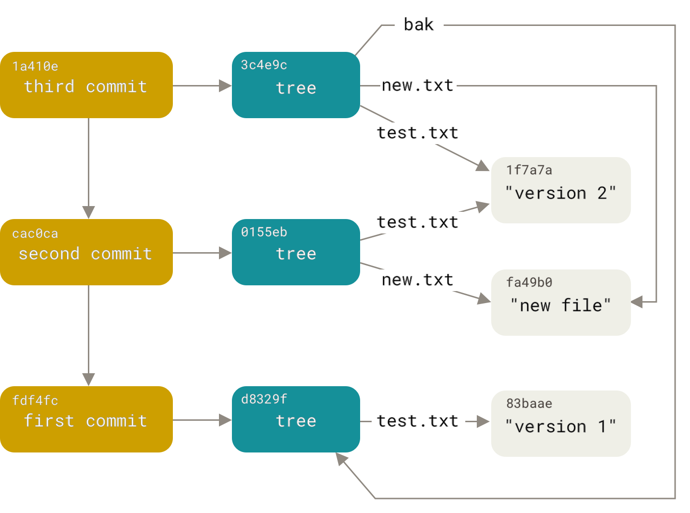
引用
引用不是 object。
如果你对仓库中从一个提交（比如 1a410e）开始往前的历史感兴趣，那么可以运行 git log 1a410e 这样的命令来显示历史，不过你需要记得 1a410e 是你查看历史的起点提交。 如果我们有一个文件来保存 SHA-1 值，而该文件有一个简单的名字， 然后用这个名字指针来替代原始的 SHA-1 值的话会更加简单。
所以 ref 是对 sha-1 起的名字，用文件指针来装 hash，而 commit 本身就是hash。
若要创建一个新引用来帮助记忆最新提交所在的位置，从技术上讲我们只需简单地做如下操作：
1 | |
现在，你就可以在 Git 命令中使用这个刚创建的新引用来代替 SHA-1 值了：
1 | |
我们不提倡直接编辑引用文件。 如果想更新某个引用，Git 提供了一个更加安全的命令 update-ref 来完成此事：
1 | |
这基本就是 Git 分支的本质：一个指向某一系列提交之首的指针或引用。 若想在第二个提交上创建一个分支，可以这么做：
1 | |
这个分支将只包含从第二个提交开始往前追溯的记录：
1 | |

HEAD 引用
HEAD 文件通常是一个符号引用（symbolic reference），指向目前所在的分支。 所谓符号引用，表示它是一个指向其他引用的指针。
然而在某些罕见的情况下，HEAD 文件可能会包含一个 git 对象的 SHA-1 值。 当你在检出一个标签、提交或远程分支，让你的仓库变成 “分离 HEAD”状态时，就会出现这种情况。
如果查看 HEAD 文件的内容，通常我们看到类似这样的内容：
1 | |
如果执行 git checkout test，Git 会像这样更新 HEAD 文件：
1 | |
当我们执行 git commit 时，该命令会创建一个提交对象，并用 HEAD 文件中那个引用所指向的 SHA-1 值设置其父提交字段。
你也可以手动编辑该文件，然而同样存在一个更安全的命令来完成此事：git symbolic-ref。 可以借助此命令来查看 HEAD 引用对应的值：
1 | |
同样可以设置 HEAD 引用的值：
1 | |
ched 的本质
让我们来看看当我们签出提交 b时会发生什么（这里我们展示了两种方法）：
1 | |
1 | |
请注意，无论我们使用哪条结账命令，HEAD现在都直接指向提交b。这就是所谓的分离的HEAD’状态。 这意味着，HEAD指向一个特定的提交，而不是指向一个命名的分支。
如果从 b fork 出 e 和 f 提交，我们必须创建一个 ref，才能不被 git gc 清理掉：
1 | |
如果我们已经离开了f’的提交，那么我们必须首先恢复它的对象名称（通常使用git reflog），然后我们可以创建一个对它的引用。例如，要查看HEAD指向的最后两个提交，我们可以使用以下任一命令：
1 | |
标签引用
前面我们刚讨论过 Git 的三种主要的对象类型（数据对象、树对象 和 提交对象 ），然而实际上还有第四种。 标签对象（tag object） 非常类似于一个提交对象——它包含一个标签创建者信息、一个日期、一段注释信息，以及一个指针。
主要的区别在于，标签对象通常指向一个提交对象，而不是一个树对象。 它像是一个永不移动的分支引用——永远指向同一个提交对象（head 会移动），只不过给这个提交对象加上一个更友好的名字罢了。
远程引用
我们将看到的第三种引用类型是远程引用（remote reference）。 如果你添加了一个远程版本库并对其执行过推送操作，Git 会记录下最近一次推送操作时每一个分支所对应的值，并保存在 refs/remotes 目录下。 例如，你可以添加一个叫做 origin 的远程版本库，然后把 master 分支推送上去：
1 | |
此时，如果查看 refs/remotes/origin/master 文件，可以发现 origin 远程版本库的 master 分支所对应的 SHA-1 值，就是最近一次与服务器通信时本地 master 分支所对应的 SHA-1 值：
1 | |
远程引用和分支（位于 refs/heads 目录下的引用）之间最主要的区别在于，远程引用是只读的。 虽然可以 git checkout 到某个远程引用，但是 Git 并不会将 HEAD 引用指向该远程引用。因此，你永远不能通过 commit 命令来更新远程引用。 Git 将这些远程引用作为记录远程服务器上各分支最后已知位置状态的书签来管理。